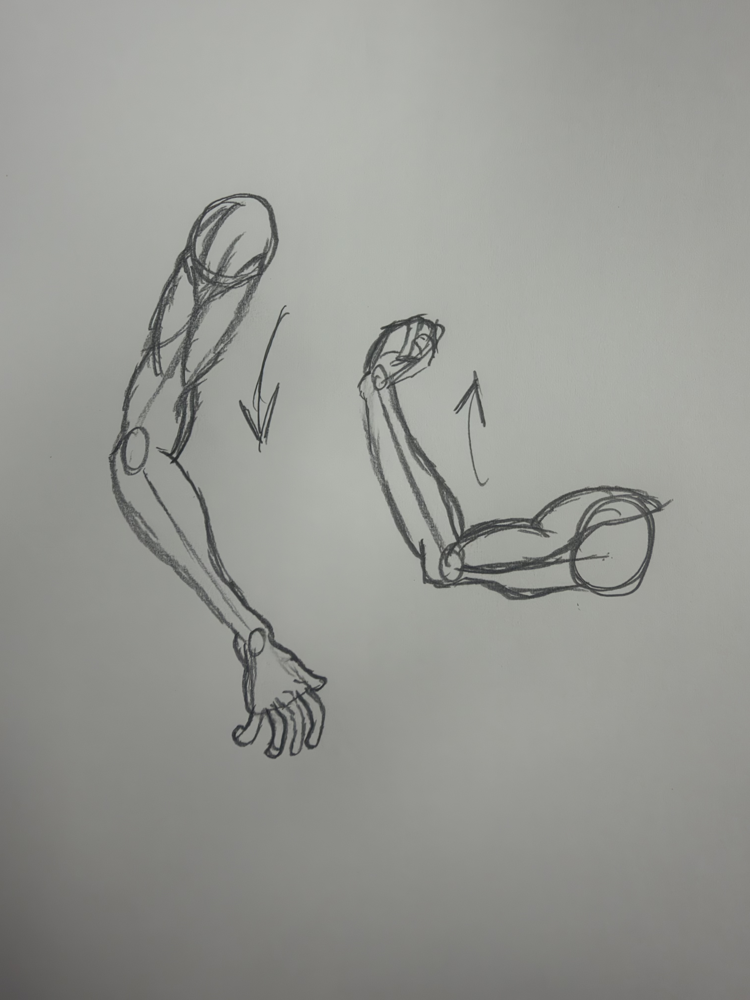
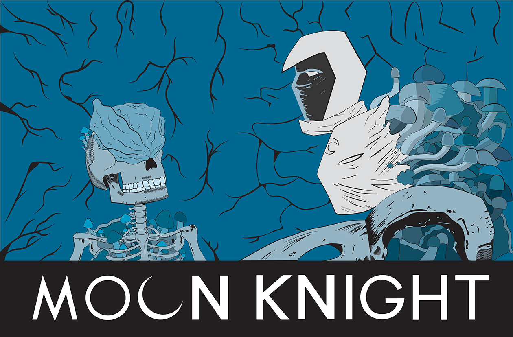
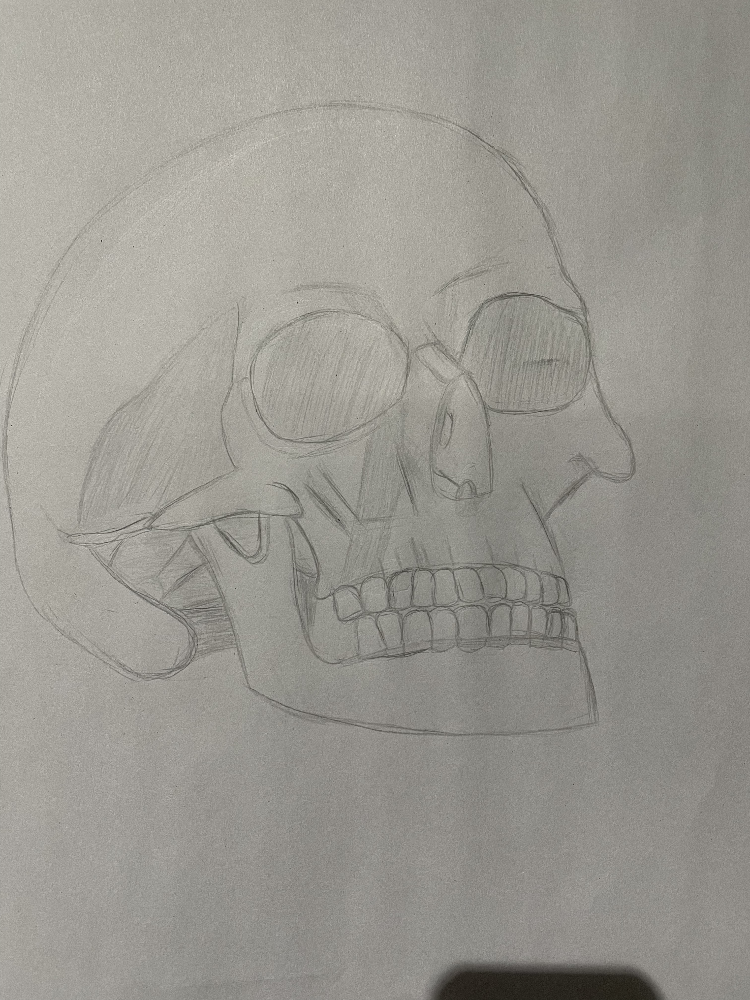

if you want to start basic and do it in sections then you can learn how to draw individual body parts as a start. Leanr to draw limbs, torsos, heads, faces and more. Once you learn to draw individual parts you can then put them all together. An easier start since it can be at your pace and will be your own style. Go with what you feel is your comfort zone.

This will teach you the many different techniques, methods and equipment needed to create and post you're digital artwork. we work with Adobe products, and drawing softwares like krita, procreate, clip studio paint and Corel painter. We also teach how to save on different softwares too. Anything from stuff to print or something to upload for business. We also help with formatting with comic book stlye or any custom format for drawing. NOTICE: We do not support or work with any generative ai or ai tools.

Learn how to draw that which is in front of you. Set up an easel and get your pen and paper while you study the object in front of you. You start with small singular objects, then work up to larger objects, then groups and eventually ypu will reach people that you can draw. Watch videos or read tips on methods and trciks in order to draw or paint still lives.